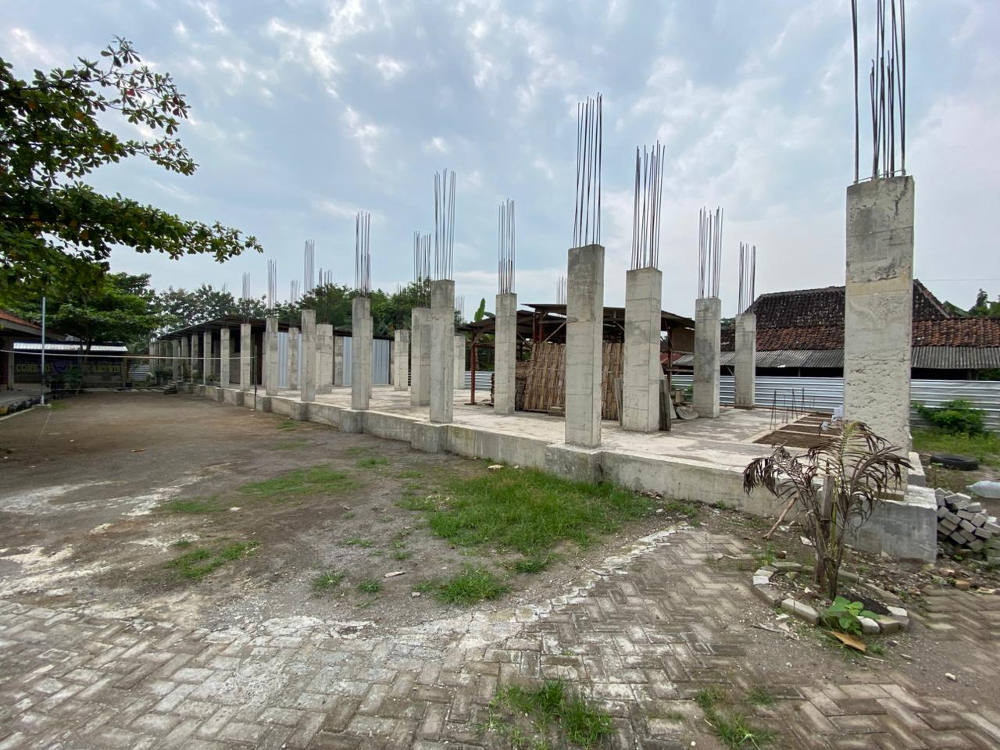

Berita Terbaru

Pembangunan Gedung Fasilitas Baru SD Plus Darussalam
SD Plus Darussalam sedang melakukan pengembangan kampus 2...
**Ngawi – Pembangunan SD Plus Darussalam Kampus 2 terus menunjukkan progres yang positif. Saat ini, proses pembangunan telah memasuki tahap pondasi, yang menjadi langkah awal penting dalam mewujudkan fasilitas pendidikan yang representatif dan berkualitas bagi masyarakat. Tahap pondasi merupakan bagian vital dalam pembangunan sebuah gedung, karena menjadi dasar kekuatan struktur bangunan ke depan. Dengan dimulainya tahap ini, harapan besar semakin dekat untuk menghadirkan lingkungan belajar yang nyaman, aman, dan mendukung perkembangan akademik maupun karakter siswa. SD Plus Darussalam Kampus 2 dirancang sebagai pengembangan dari lembaga pendidikan yang telah ada, dengan tujuan memperluas akses pendidikan Islami yang unggul dan berkarakter. Ke depan, sekolah ini diharapkan mampu menjadi pusat pendidikan yang mencetak generasi berilmu, berakhlak mulia, serta siap menghadapi tantangan zaman. Meski pembangunan telah berjalan, panitia masih membuka kesempatan bagi para dermawan dan masyarakat luas untuk turut berpartisipasi dalam bentuk donasi. Dukungan dari berbagai pihak sangat dibutuhkan agar proses pembangunan dapat berjalan lancar hingga selesai. Setiap donasi yang diberikan tidak hanya menjadi kontribusi nyata dalam pembangunan fisik, tetapi juga menjadi amal jariyah yang pahalanya terus mengalir.**
WhatsApp: +62 852-1010-0165
a/n: Havidz Fuaddin Al Kolidi

Haflah Muwadda’ah Angkatan XII SD Plus Darussalam TP 2025/2026
Ngawi – Suasana haru dan kebahagiaan menyelimuti pelaksanaan...
Ngawi – Suasana haru dan kebahagiaan menyelimuti pelaksanaan Haflah Muwadda’ah Angkatan XII SD Plus Darussalam Tahun Pelajaran 2025/2026 yang berlangsung dengan penuh khidmat. Kegiatan ini menjadi momen istimewa sebagai tanda perpisahan sekaligus pelepasan siswa-siswi kelas VI yang telah menyelesaikan masa belajarnya di jenjang sekolah dasar. Acara Haflah Muwadda’ah tidak hanya menjadi seremoni kelulusan, tetapi juga menjadi ajang refleksi atas perjalanan panjang para siswa selama menempuh pendidikan di SD Plus Darussalam. Berbagai penampilan seperti pembacaan ayat suci Al-Qur’an, penampilan seni, hingga penyampaian pesan dan kesan dari perwakilan siswa turut memeriahkan kegiatan ini. Dalam sambutannya, pihak sekolah menyampaikan rasa bangga dan apresiasi kepada seluruh siswa Angkatan XII yang telah menunjukkan dedikasi, semangat belajar, serta akhlak yang baik selama menempuh pendidikan. Harapan besar juga disampaikan agar para lulusan dapat melanjutkan pendidikan ke jenjang berikutnya dengan penuh semangat dan tetap menjaga nilai-nilai Islami yang telah ditanamkan. Tak sedikit orang tua yang turut merasakan haru saat menyaksikan putra-putrinya berada di momen perpisahan ini. Tangis bahagia dan rasa syukur menyatu, menjadi bukti bahwa perjalanan pendidikan yang dilalui telah memberikan kesan mendalam bagi semua pihak. Kegiatan Haflah Muwadda’ah ini juga menjadi simbol doa dan harapan agar para lulusan SD Plus Darussalam dapat menjadi generasi yang berilmu, berakhlak mulia, serta mampu memberikan kontribusi positif bagi masyarakat, bangsa, dan agama. Dengan terselenggaranya acara ini, SD Plus Darussalam kembali meneguhkan komitmennya sebagai lembaga pendidikan yang tidak hanya berfokus pada prestasi akademik, tetapi juga pembentukan karakter dan nilai-nilai keislaman. Selamat dan sukses untuk seluruh siswa-siswi Angkatan XII. Semoga langkah ke depan senantiasa dimudahkan dan diberkahi.